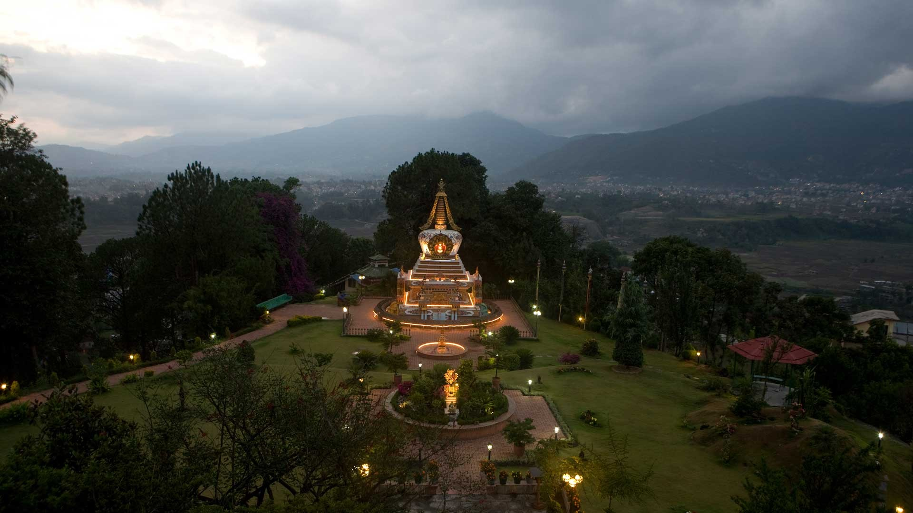
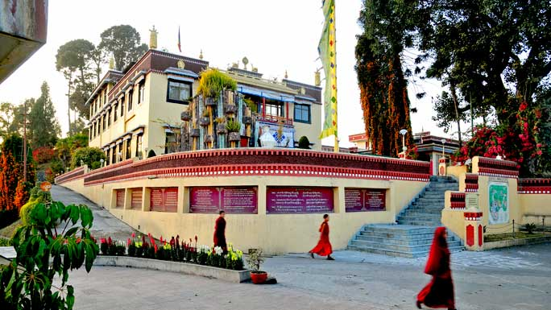
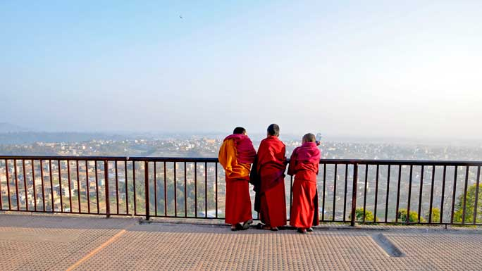
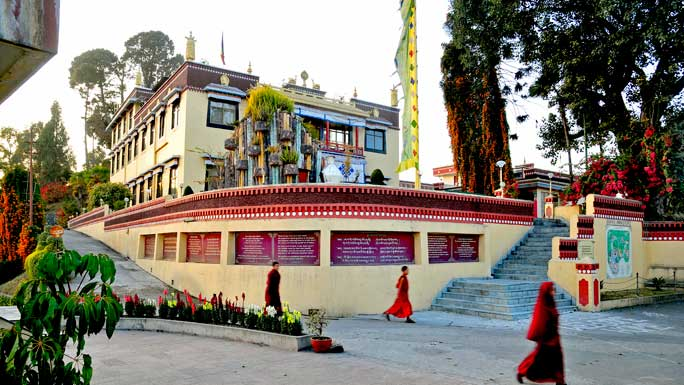
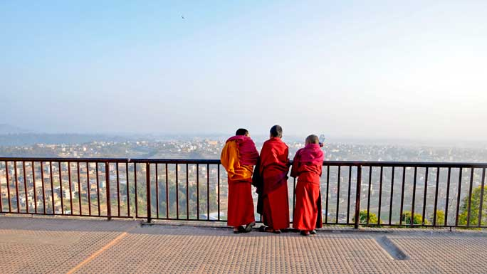

a center for spiritual excellence!
KAPAN MONASTERY
Visit the Kapan Monastery in Kathmandu,a center for spiritual excellence!
One of the most popular monasteries of Tibetan Buddhism is the Kapan Monastery which is perched on a hill not far north of Boudha. Each year a large number of foreigners arrive here to study Buddhism and meditation. Kapan Monastery was founded by Lama Thubten Yeshe who died in 1984. Interestingly, a small Spanish boy named Osel Torres became his successor after he was declared a reincarnation of the great Lama. However, the reincarnation does not reside at Kapan anymore.
The spiritual program at Kapan offers introductory level courses in what is known as the Discover Buddhism series, dealing with the basic principles of Tibetan Buddhism and meditation. The series known as the Next Step series, leads on to a deeper exploration of these principles.
 Courses deal with Mind Training, Karma, Death and Dying, Bodhicitta, and more. There are 5-day and 10-day courses and a month long course on meditation. There are also short courses on Tibetan medicine, Thangka painting and the very popular 10-day residential courses in Buddhist psychology and philosophy. Courses vary in length and some students spend months at the monastery devoted to their studies. In the past many were housed in tents due to lack of space but now there are enough rooms to accommodate them. There is a sealed road all the way to the monastery but it is also a pleasant hike from Boudha. People from many different Nepali ethnic groups also join the monastery as young boys to become monks. These young lads get formal education in math, science and other subjects just as their contemporaries in local schools. Kids can join at a tender age and are mostly from families who traditionally send one child to become a monk or a nun.
 Kapan Monastery was once open to visitors all week but with too many visitors arriving, entrance has been restricted. There is a library and a large garden with solar lights that light for evenings. A proper restaurant with great views of Kathmandu down below is open to all and serves good meals. During special pujas, large crowds of devotees climb up to the monastery to receive blessings and pay homage. Having reached Kopan Monastery, you might as well walk along the ridge and visit the Phulhari Monastery which sits on a hill higher than Kapan. The hike takes less than an hour. In between the two is the Vajrayan Monastery. Phulhari is worth a visit for the amazing Thangka paintings that adorn the entire facade and the interiors of the halls. The building was designed by an American architect /Buddhist monk who has combined the best of eastern and western architecture. Even the paintings lean towards more pastel colors rather than the bright colors usually associated with Tibetan Buddhism.
 Courses deal with Mind Training, Karma, Death and Dying, Bodhicitta, and more. There are 5-day and 10-day courses and a month long course on meditation. There are also short courses on Tibetan medicine, Thangka painting and the very popular 10-day residential courses in Buddhist psychology and philosophy. Courses vary in length and some students spend months at the monastery devoted to their studies. In the past many were housed in tents due to lack of space but now there are enough rooms to accommodate them. There is a sealed road all the way to the monastery but it is also a pleasant hike from Boudha. People from many different Nepali ethnic groups also join the monastery as young boys to become monks. These young lads get formal education in math, science and other subjects just as their contemporaries in local schools. Kids can join at a tender age and are mostly from families who traditionally send one child to become a monk or a nun.
 Kapan Monastery was once open to visitors all week but with too many visitors arriving, entrance has been restricted. There is a library and a large garden with solar lights that light for evenings. A proper restaurant with great views of Kathmandu down below is open to all and serves good meals. During special pujas, large crowds of devotees climb up to the monastery to receive blessings and pay homage. Having reached Kopan Monastery, you might as well walk along the ridge and visit the Phulhari Monastery which sits on a hill higher than Kapan. The hike takes less than an hour. In between the two is the Vajrayan Monastery. Phulhari is worth a visit for the amazing Thangka paintings that adorn the entire facade and the interiors of the halls. The building was designed by an American architect /Buddhist monk who has combined the best of eastern and western architecture. Even the paintings lean towards more pastel colors rather than the bright colors usually associated with Tibetan Buddhism.
GETTING THERE
There are two routes to Kapan Monastery. The usual route is through Chabahil and it turns left at Chuchepati where there is a statue of Pasang Lhamu the first Nepali female to climb Everest. The other route follows the Ring Road after Chabahil and goes past the Gopi Krishna Radha Cinema Hall. There are buses up to the base of the hill on top of which the monastery is perched. Taxis can be hired from the city. Other alternatives are to hire a motorcycle, mountain bike or just simply walk all the way. Hikes can begin at Boudha and can be combined with the Gokarna hike or even the Shivapuri hike. Walking from the east side of the stupa, the road goes through Phulbari and meets the road coming from Chuchepati. Then it’s downhill and the monastery comes into view.